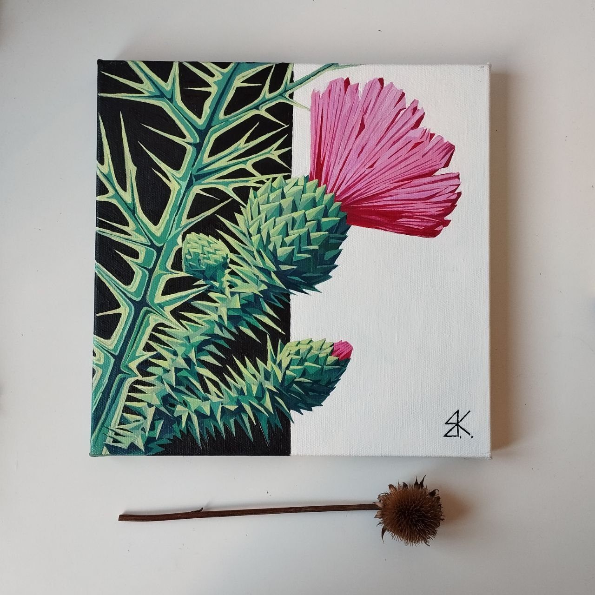

Fine Artist & Scenographer
Evgeny Kreshchensky is a Belgrade-based Visual Artist and Scenographer. His work explores the intersection of theatrical space and graphic form, focusing on the raw aesthetics of nature and structural symbolism.
